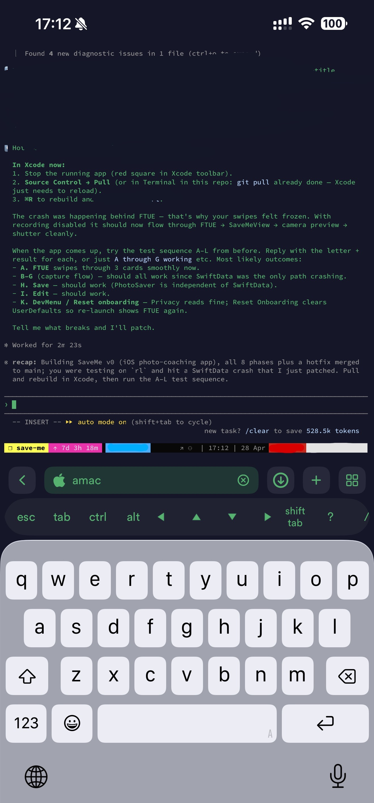
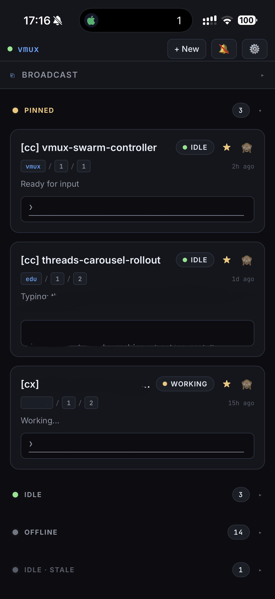
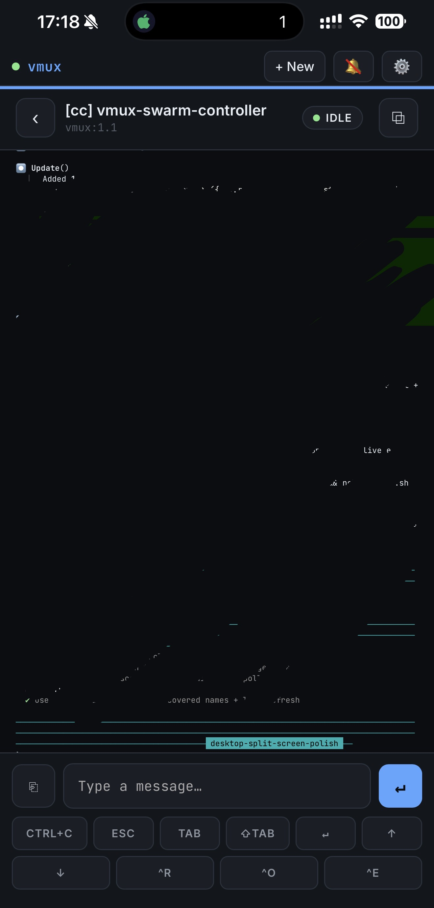

My setup for running 10+ CLI coding agents at once
tmux, Tailscale, Termius on iOS, and a small PWA panel — how I keep 10+ parallel coding agents tractable from the desk or the train.
Also available in 繁體中文.

On a normal day I have 10+ CLI coding agents running in parallel — a mix of Claude Code, Codex, and Gemini CLI. Some are running long-horizon tasks — features, data pipelines, training jobs, deep-dive investigations. Others are doing chores — commits, PRs, reviews, docs. A few friends have asked how I keep this from collapsing into chaos, so here's the setup.
The stack
Nothing exotic: tmux + vim on a home box, iTerm or Ghostty on the Mac,
Tailscale for remote access,
Termius on the phone, and a
small PWA I've been building to act as a control panel. The interesting part isn't any single
piece — it's how cheaply they let me jump between agents.
┌──────────────┐ ┌─ home box ──────────────────────┐
│ Mac │ │ tmux │
│ (iTerm / │ ◀───────┐ │ ├─ session: project-a │
│ Ghostty) │ │ │ │ ├─ window: Claude Code │
└──────────────┘ │ │ │ ├─ window: tests / logs │
│ Tailscale │ │ └─ window: git ops │
┌──────────────┐ ├──── (private ─────▶│ ├─ session: project-b │
│ Phone │ ◀───────┤ mesh) │ │ └─ ... │
│ (Termius + │ │ │ └─ session: ... │
│ PWA panel) │ ◀───────┘ │ │
└──────────────┘ └─────────────────────────────────┘One tmux session per project
tmux is a terminal multiplexer with three nested concepts: sessions (long-lived workspaces, one per project), windows (tabs inside a session, one per concern), panes (splits inside a window). Sessions live on the host — close the terminal, lose Wi-Fi, switch from laptop to phone, and your agents keep running. Reattach with one command and pick up where you were.
My layout: a session per project (tmux new -s <project>),
one window for the agent, one for tests/logs, one for a long pipeline, one for git ops.
Long-horizon tasks get assigned and left running; I tab out, instruct the next agent,
rotate back when something needs attention. Install and key bindings are
in the setup guide near the bottom.
Tailscale: home box, zero public exposure
The agents run on my home machine because that's where the GPU and disk are. Tailscale puts
my laptop, phone, and that box on the same private mesh, so SSH and any prototype web servers
are reachable from wherever I'm logged in — without ever being on the public internet.
Concrete example: I hit http://homebox:8501 for a Streamlit prototype directly
from my phone, no port forwarding, no nginx, no public hostname.
This matters more than it sounds: half of what I'm running has no auth, and I'd rather not
think about that.
Termius on the phone
When I'm out, I SSH from Termius on iOS. What makes Termius actually usable for tmux is its shortcut bar — esc, tab, ctrl, alt, arrows, shift+tab — sitting right above the keyboard. With those plus the tmux prefix, I can drive a Claude Code session one-handed on a train.

The trick that makes the phone experience truly seamless: have SSH auto-attach to tmux,
so every Termius connection lands directly in your last session — no tmux a
step. Add this to ~/.bashrc on the home box:
if [[ -z "$TMUX" && -n "$SSH_CONNECTION" && $- == *i* ]]; then
tmux attach -t main 2>/dev/null || tmux new -s main
fi
Now every connection drops you straight into main. The setup guide has the Termius-side variant if you'd rather configure it per-host.
When you actually need the GUI
Most of the work is terminal-native, but every so often I need pixels — a dashboard an agent spun up, a Jupyter UI, a tool that won't run headless. For those cases I keep Chrome Remote Desktop and a VNC server installed on the home box. CRD is the easier path and works through any browser; VNC is fine too, as long as you bind it to the Tailscale interface so it's never on the public internet. Both are slower than SSH, but they cover the 5% of work that genuinely needs a screen.
The missing piece: a panel for all the agents
The friction point isn't typing into a session. It's finding the right one: which agent finished, which is waiting on input, which has gone quiet. Opening Termius, attaching to tmux, hopping to the right session, scrolling back — that's a 20-second tax. Ten sessions × dozens of checks × twenty seconds: the math made the build obvious.
So I built a small PWA that surfaces every running CLI agent as a card, sorted by last interaction. Each card shows status (working, idle, waiting on input), the project tag, and the latest output. It pushes a notification when a session finishes or asks a question. Tapping a card opens a chat-style view where I can send the next instruction directly — no SSH, no tmux navigation.


It's been the single biggest improvement to my mobile workflow this year. I'm calling the polished, open-source version vmux. Right now the repo is just a placeholder — if it crosses 100 stars, I'll start the port and ship it as a real project. Star it to vote, and you'll get the release notification automatically when it lands.
What I'd still add
A way for one agent to read another's output without copy-paste. A broadcast mode for sending the same prompt to a subset of sessions (the panel has a placeholder for this). Voice input, for buses.
The core lesson is small: shorten every step between you and the agent, and orchestrating ten of them stops feeling like work.
Setup guide: tmux, Tailscale, Termius
If you don't already have these three running, this is the 20-minute path from zero to "ready to follow along." Skip if you do.
tmux
Install: brew install tmux on macOS; via WSL on Windows; your package
manager on Linux.
Sane defaults (Oh My Tmux):
git clone https://github.com/gpakosz/.tmux.git ~/.tmux
ln -s -f ~/.tmux/.tmux.conf ~/.tmux.conf
cp ~/.tmux/.tmux.conf.local ~/The six commands you'll actually use:
tmux a # attach to last session
tmux new -s <name> # new session
<C-b> z # zoom current pane
<C-b> s # pick a session
<C-b> q # show pane numbers → jump
<C-b> <n> # jump to window nFor everything else, two cheatsheets cover the full surface: MohamedAlaa's gist (one-screen) and tmuxcheatsheet.com (searchable).
Verify: tmux new -s test shows a green status bar.
Ctrl-b d detaches; tmux a -t test reattaches.
Tailscale
- Sign up at tailscale.com (free for up to 100 personal devices).
- Home box:
brew install --cask tailscale(macOS) or installer from tailscale.com/download (Windows). - Phone (iOS): App Store → Tailscale → sign in with the same account.
- Turn on MagicDNS (admin console → DNS) so your home box becomes
ssh arthur-laptop-reachable instead of by IP.
Verify: phone Tailscale app shows the home box "Active";
http://<home-box>:<port> in phone Safari hits your local dev server.
Termius
- App Store → Termius (free tier is enough).
- Hosts → New Host. Tailscale MagicDNS hostname, port 22, your username, paste your SSH private key.
- Settings → Terminal → Bottom bar. Add Esc, Ctrl, Tab, arrow keys, Shift+Tab — this is the killer feature, easy to miss.
- Settings → enable "Auto-Reconnect" so cellular ↔ Wi-Fi handoffs don't drop you.
Auto-attach to tmux on SSH
So every SSH connection drops you straight into your tmux session instead of a fresh shell. Two ways:
Server-side — add to ~/.bashrc or ~/.zshrc on the home box:
if [[ -z "$TMUX" && -n "$SSH_CONNECTION" && $- == *i* ]]; then
tmux attach -t main 2>/dev/null || tmux new -s main
fi
Guards mean only interactive SSH triggers it, so scp / rsync stay unaffected.
Termius-side — Hosts → Edit → Startup Command:
tmux attach -t main || tmux new -s mainThis snippet has a second job: it's also what gives tmux-continuum a live server to restore into after a reboot.
Smoke test
- Home box:
tmux new -s claude→ start Claude Code → Ctrl-b d → close the terminal. The agent keeps running. - Phone: open Termius, connect,
tmux a -t claude. Type a message into the agent. - You're now driving a desktop CLI agent from a phone over a private network. That's the whole stack.
Persisting sessions across reboots
The tmux server lives in memory. Power cut, OS update, or a stray killall tmux wipes
every session — for a workflow built on long-running agents, that's hours of in-flight context gone.
Three plugins fix it: TPM (plugin manager),
tmux-resurrect (snapshot save/restore), and
tmux-continuum (auto-snapshot on a timer, auto-restore on tmux server start).
Install TPM:
git clone https://github.com/tmux-plugins/tpm ~/.tmux/plugins/tpm
Append to ~/.tmux.conf.local (if you're on the gpakosz config from the appendix)
or ~/.tmux.conf otherwise:
# Plugins
set -g @plugin 'tmux-plugins/tpm'
set -g @plugin 'tmux-plugins/tmux-resurrect'
set -g @plugin 'tmux-plugins/tmux-continuum'
# Capture pane scrollback so output is restored too
set -g @resurrect-capture-pane-contents 'on'
# Restore vim/nvim sessions and keep ssh panes alive
set -g @resurrect-strategy-vim 'session'
set -g @resurrect-strategy-nvim 'session'
set -g @resurrect-processes 'ssh psql mysql sqlite3 "~vim->vim" "~nvim->nvim"'
# Autosave every 15 min, auto-restore on tmux server start
set -g @continuum-save-interval '15'
set -g @continuum-restore 'on'
# TPM init — must be the LAST line
run '~/.tmux/plugins/tpm/tpm'
Reload (tmux source-file ~/.tmux.conf), then inside any session press
prefix + I to fetch the plugins. Continuum can only auto-restore if a tmux server
is alive on the box — the auto-attach snippet above
is what gives it one on every login.
Verify the loop: open a session, run a few commands, prefix + Ctrl-s to snapshot,
killall tmux, then start a new shell — continuum should restore the layout, working
directories, and (because of capture-pane-contents) the visible scrollback.
One caveat: @resurrect-capture-pane-contents 'on' writes pane scrollback to
~/.local/share/tmux/resurrect/ in plain text. If your panes ever flash API keys
or other secrets, either drop that line or make sure FileVault / disk encryption is on.
Appendix: ~/.vimrc
My ~/.tmux.conf is gpakosz/.tmux
unmodified — the upstream is the canonical source, and pasting it here would just be 1900 lines
of someone else's repo. Personal tweaks go in ~/.tmux.conf.local, which I keep small.
What's worth showing is the .vimrc below: mine, and deliberately minimal.
~/.vimrc
" Comments in Vimscript start with a `"`.
" If you open this file in Vim, it'll be syntax highlighted for you.
" Vim is based on Vi. Setting `nocompatible` switches from the default
" Vi-compatibility mode and enables useful Vim functionality. This
" configuration option turns out not to be necessary for the file named
" '~/.vimrc', because Vim automatically enters nocompatible mode if that file
" is present. But we're including it here just in case this config file is
" loaded some other way (e.g. saved as `foo`, and then Vim started with
" `vim -u foo`).
set nocompatible
" Turn on syntax highlighting.
syntax on
colorscheme delek
" Disable the default Vim startup message.
set shortmess+=I
" Show line numbers.
set number
set nu
set ai
set tabstop=4
set ls=2
set autoindent
" This enables relative line numbering mode. With both number and
" relativenumber enabled, the current line shows the true line number, while
" all other lines (above and below) are numbered relative to the current line.
" This is useful because you can tell, at a glance, what count is needed to
" jump up or down to a particular line, by {count}k to go up or {count}j to go
" down.
set relativenumber
" Always show the status line at the bottom, even if you only have one window open.
set laststatus=2
" The backspace key has slightly unintuitive behavior by default. For example,
" by default, you can't backspace before the insertion point set with 'i'.
" This configuration makes backspace behave more reasonably, in that you can
" backspace over anything.
set backspace=indent,eol,start
" By default, Vim doesn't let you hide a buffer (i.e. have a buffer that isn't
" shown in any window) that has unsaved changes. This is to prevent you from "
" forgetting about unsaved changes and then quitting e.g. via `:qa!`. We find
" hidden buffers helpful enough to disable this protection. See `:help hidden`
" for more information on this.
set hidden
" This setting makes search case-insensitive when all characters in the string
" being searched are lowercase. However, the search becomes case-sensitive if
" it contains any capital letters. This makes searching more convenient.
set ignorecase
set smartcase
" Enable searching as you type, rather than waiting till you press enter.
set incsearch
" Unbind some useless/annoying default key bindings.
nmap Q <Nop> " 'Q' in normal mode enters Ex mode. You almost never want this.
" Disable audible bell because it's annoying.
set noerrorbells visualbell t_vb=
" Enable mouse support. You should avoid relying on this too much, but it can
" sometimes be convenient.
set mouse+=a
" Try to prevent bad habits like using the arrow keys for movement. This is
" not the only possible bad habit. For example, holding down the h/j/k/l keys
" for movement, rather than using more efficient movement commands, is also a
" bad habit. The former is enforceable through a .vimrc, while we don't know
" how to prevent the latter.
" Do this in normal mode...
nnoremap <Left> :echoe "Use h"<CR>
nnoremap <Right> :echoe "Use l"<CR>
nnoremap <Up> :echoe "Use k"<CR>
nnoremap <Down> :echoe "Use j"<CR>
" ...and in insert mode
inoremap <Left> <ESC>:echoe "Use h"<CR>
inoremap <Right> <ESC>:echoe "Use l"<CR>
inoremap <Up> <ESC>:echoe "Use k"<CR>
inoremap <Down> <ESC>:echoe "Use j"<CR>
Questions, your own setup to share, or want early access to the panel? Find me on LinkedIn or X.
Further reading
If any of this is new — shell tools, vim, tmux, the whole "live in the terminal" mindset — the one resource I recommend without hesitation is MIT's Missing Semester (2020). It's the class that should exist in every CS program and doesn't. There's also a 2026 edition I haven't worked through yet, but the 2020 version alone will compound for years.